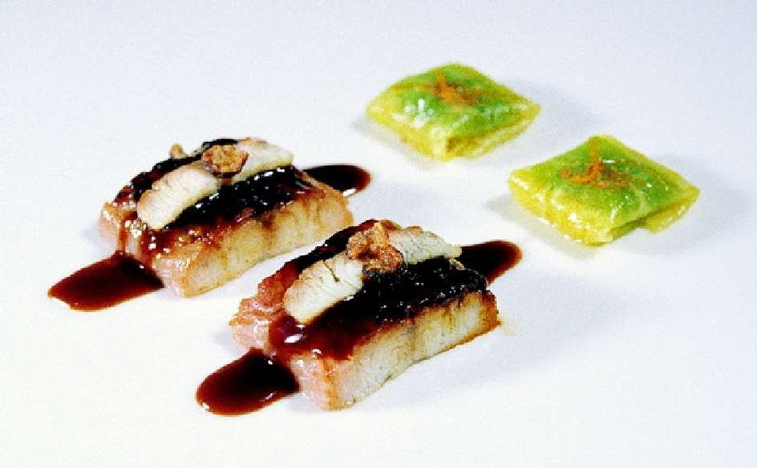

Hot smoked eel with pineapple and fennel ravioli

For the fennel juice
For the fennel jelly
For the pineapple slices
For the pineapple and fennel ravioli
For the meat stock
For the orange sauce
For the eel fillets
For the crunchy eel skin
To finish
Fennel juice — Remove the leaves from the stems. Cut the stems into small pieces.
Blanch the stems for 2 minutes and the leaves for 30 seconds. Freshen and drain.
Blend all the fennel and the water together in a food processor. Strain and sieve.
Fennel jelly — Heat a ¼ of the fennel juice and dissolve the gelatine in it. Remove from the heat and mix with the rest of the fennel juice.
Pour a 0.6-cm thick layer in a dish and leave to set in the fridge for at least 3 hours.
Once it has set, cut it into 2 x 2 cm squares.
Pineapple slices — Peel the pineapple and cut it into 6 x 6 cm squares.
Use a meat slicer to cut 6 x 6 cm slices which should be 0.1 cm thick and not reach the heart.
Spread the pineapple slices over a tray and cover them with kitchen paper to absorb any excess juices from the pineapple.
Pineapple and fennel ravioli — Remove the kitchen paper and place a square of jelly on the centre of each pineapple slice.
Fold the ends of the pineapple slices over the jelly and repeat the operation with the remaining two ends.
Meat stock — Add the sugar to the red wine and reduce it by half. Keep to deglaze the frying pan used to seal the blanquette.
Brown the veal bones in the oven at 180 ºC.
Cut up the veal blanquette into pieces, 10 cm long and 1.5 cm wide. Seal in a little oil over a high heat. The meat should be golden on the outside, but raw inside. Deglaze with the wine.
Cut the vegetables into small pieces. Brown on the oven in a little oil at 150 ºC.
Once they begin to brown all over, add the tomato quarters. Continue cooking until the juices have come out of the tomato and the vegetables are golden brown.
Put all the ingredients in a pressure cooker. Cover with cold water and cook over a medium heat. Whisk constantly.
Once the liquid has started to boil, lower the heat so that it simmers for 6 hours.
Strain and leave to cool so the fat solidifies. Scrape it off.
Reduce until you have a tasty, thick stock. Strain.
Orange sauce — Caramelise the muscovado sugar in a little water.
Deglaze with the orange juice and reduce by half.
Add the meat stock and bring to the boil.
Slightly thicken with the cornflour and cook for approx. 5 minutes.
Remove from the heat and add the orange rind.
Keep warm.
Eel fillets — Separate the two fillets from the backbone and use tweezers to remove the largest bones. Remove the skin from the eel.
Cut the fillets into 20-g portions, each measuring around 3.5 x 2.5 cm.
Cut 8 eel slices, measuring 1 x 2 cm, from the thinnest part of the fish back.
Crunchy eel skin — Choose the thickest and most wrinkled part of the skin.
Chop very finely into a julienne.
Dip the skin in flour and fry in oil at 165 ºC, making sure that it does not burn. Drain on kitchen paper.
To finish — Sprinkle a little muscovado sugar on the portions of eel and caramelise them in a frying pan over a low heat. Turn over and remove from the heat.
Place 2 pineapple raviolis at the end of the plate and put a very hot piece of eel opposite each ravioli.
Drizzle the orange sauce over each piece of eel.
Sprinkle the orange rind and the star anise over the pineapple ravioli.
Place the slices of smoked eel on the eel and top with the crunchy skin.